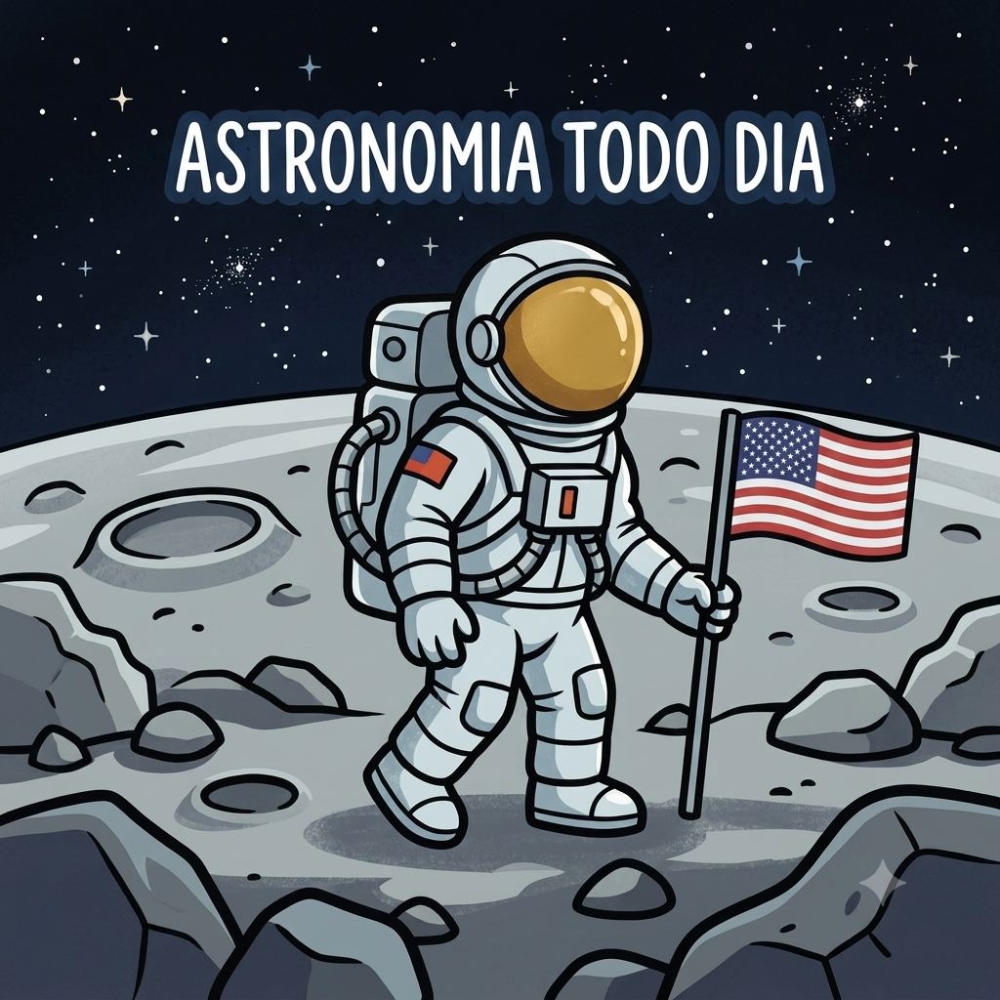

Bem-Vindos ao Astronomia Todo Dia!
Por: Isabelly Mottin
Oioii galera, sejam muito bem vindos ao espaço!
Oiii gente, sejam muito bem vindos ao espaço! Todos me chamam de Isa e criei o ‘Astronomia Todo Dia’ para compartilhar curiosidades e informações sobre nosso céu noturno — usei as cores azul e branco para lembrar a noite estrelada que está acima de nós — essa página terá como principal objetivo espalhar informações e responder perguntas sobre esse assunto. Espero que se sintam muito acolhidos e possam tirar todas as suas dúvidas por aqui! 🌙🌟